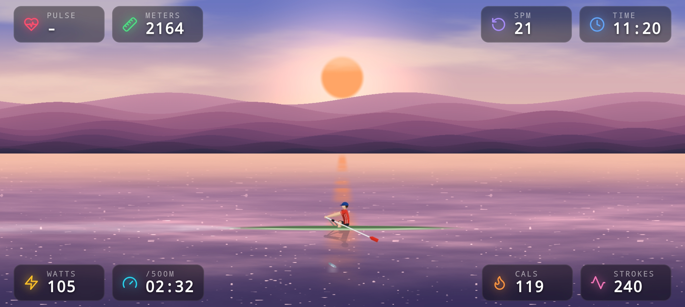

XEsync / Engineering
From a Bluetooth packet
to a workout worth keeping.
An Android app, a procedural rowing scene and a workout backend. Built together to turn a Xebex console’s data into something a rower can use.
See the app01 The system
The native layer connects to the hardware. The web layer turns incoming data into a live experience and a persistent training history.
- 01 / InputXebex consoleBluetooth · FTMS packets
- 02 / BridgeCapacitorScan · connect · notify
- 03 / ExperienceWebView + WebGLMetrics · scene · session state
- 04 / PersistencePostgreSQLPostgREST · saved workouts
02 Where the work lives
BLE + FTMS parsing
The Android app subscribes to the Xebex FTMS characteristic and forwards 20-byte
packets to the WebView. Multi-byte fields use the rower's quirky
high * 255 + low convention (not standard little-endian), reverse-engineered
from capture sessions.
Native shell, thin bridge
A Capacitor native shell owns BLE scan/connect/notify and local storage; a WebView
running vanilla JS handles UI, animation, session logic, and HTTPS upload. The bridge
module exposes the exact same send / setHandlers API the
web app already used, so the entire UI and session-tracking layer never had to change.
WebGL rowing scene
A single-pass GLSL fragment shader renders the rower, boat, water, wake, fish, sky cycle, and weather — animated procedurally from SPM and pace. The scene is generated in shader code rather than from image textures.
Event-driven state machine
Three phases — IDLE / ACTIVE / DONE — with explicit transitions, a 5 s
watchdog for inactivity, frozen elapsed time on stop, and detection of rower
counter resets that roll prior peaks into session offsets.
Backend on PostgreSQL + PostgREST
A PostgreSQL schema with SECURITY DEFINER functions exposed as a REST
API by PostgREST. The app uploads the compressed workout payload (1 Hz samples,
~3600 rows for 1 h) to /rpc/save_workout and authenticates with a
token bound to the user.
Web packaging & deployment
A PowerShell script inlines all CSS and JS into a single app.html,
writes UTF-8 without BOM, and ships it via SCP. The web files are inlined for deployment; the Capacitor bridge has a separate esbuild step. The script also copies the public site and dashboard assets.
Capacitor Android WebView BLE / FTMS Vanilla JS WebGL · GLSL PostgreSQL PostgREST PowerShell
03 Data becomes motion
The workout drives
the scene.
Stroke rate and pace feed the procedural animation. Water, wake, weather and a changing sky give the incoming numbers a visible rhythm.

04 How it evolved
Prototype
Prove the connection.
MIT App Inventor, Oracle ORDS and Oracle APEX formed the first working integration: connect the rower, move the data and display it.
Backend
Give sessions a home.
The backend moved to PostgreSQL and PostgREST as the workout data model stabilized, with accounts and session history behind the API.
Native app
Keep the interface. Replace the shell.
Capacitor replaced the block-based native layer. A consistent bridge API let the existing web interface and session logic carry forward.
05 Verification
The integration needs to hold together.
The repository includes Node tests, Playwright end-to-end tests and a local database stack for rehearsing schema changes. These support the parts that are easy to miss in a visual demo: session transitions, account flows and data access.
The engineering challenge is making the hardware connection, browser runtime and backend behave as one complete system.
Explore the implementation.
Read the source, follow the architecture or get in touch about the project.